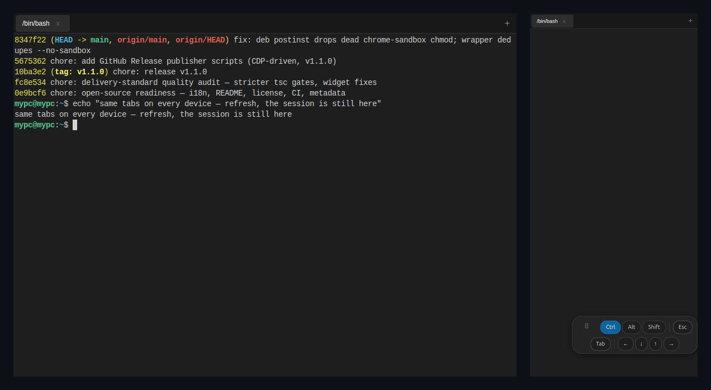
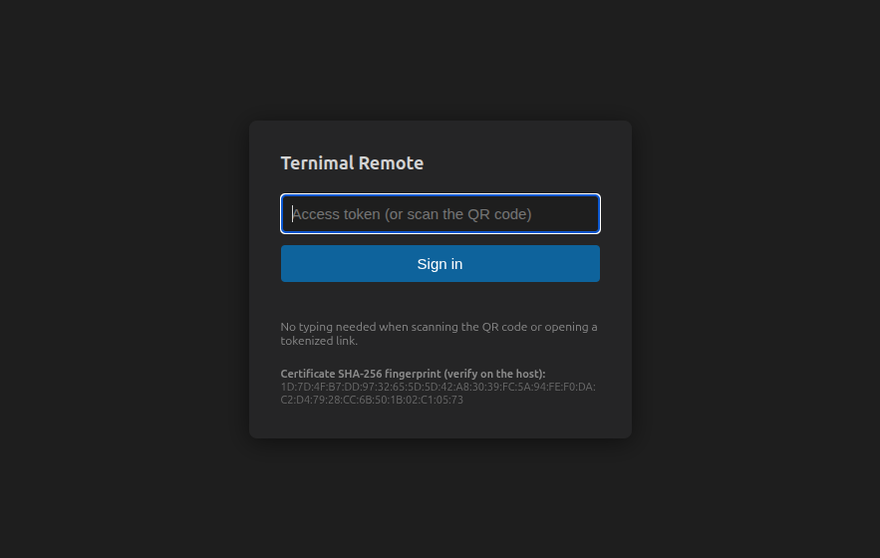
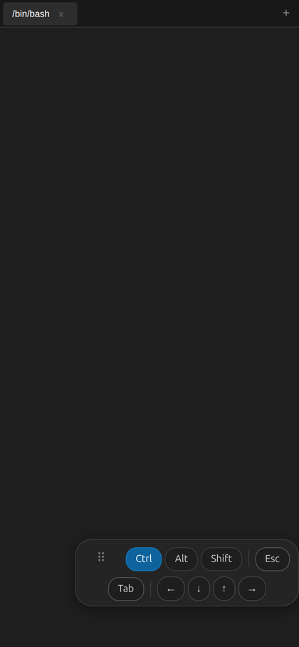
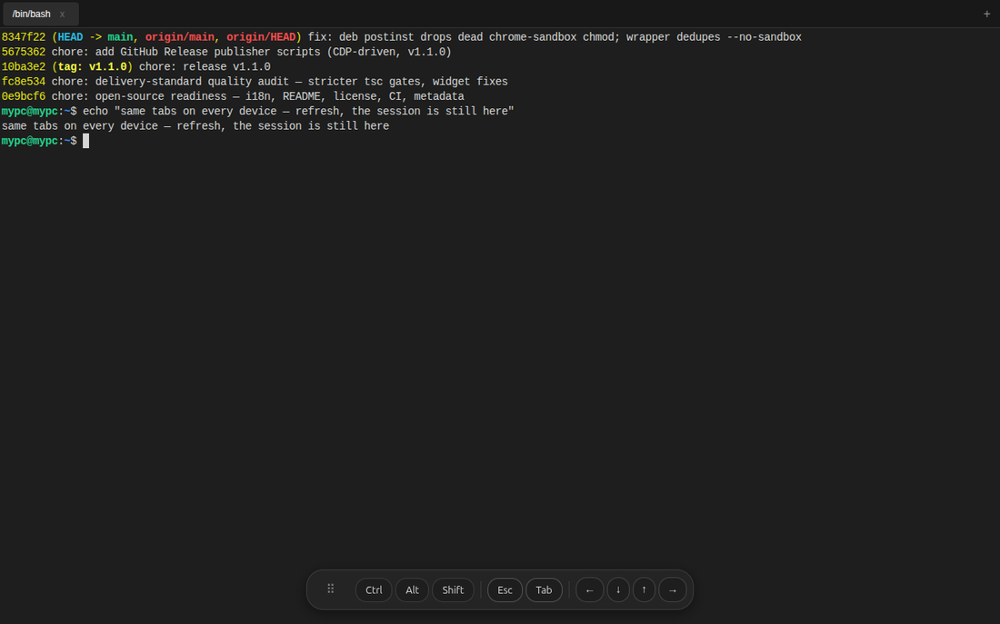

open source · LAN/VPN by design · no cloud
Ternimal mirrors your desktop terminal to any browser on your network. Scan a QR code and your phone is attached to the exact tabs that are already running — with the scrollback, the agent, and the half-finished command. 同一会话，随处可达 —— 扫码即达，断线不亡。
↓ this terminal is real — click it and type. it mirrors. help works.
both screens show one PTY — what you type lands in both, exactly how your real devices attach at home
~/why-not-ssh
Every existing answer to “check on my terminal from the couch” gives you a different terminal than the one you left running.
A brand-new session. Your agent, your scrollback, your tabs — invisible.
Works — with ceremony. If it started in tmux. If you configured it. On every box.
It's a 40-minute build. You've seen this episode.
The session you already have, on the screen you're holding. Same PTY, zero setup.
~/features
Everything below is captured from a real session — no mockups.

The desktop window and any LAN browser attach to the same PTYs over HTTPS. Refresh, lose Wi-Fi, close the laptop — the session lives on, and a ring buffer replays what you missed on re-attach.

A per-launch 192-bit token rides in the URL fragment — it never reaches the server and never lands in a log. The tray QR gets you in; rotating the token kills every session instantly. The TLS fingerprint is printed on both ends so you can eyeball for MITM.

Sticky Ctrl/Alt/Shift — stack them, one-shot them — plus Esc, Tab and arrows that follow the terminal's cursor mode. Ctrl+C, readline jumps and vim motion all work from a phone.

Remote access is a plain HTTPS page — nothing to install on the watching device. Tabs stay in lockstep between the Electron window and every attached browser.
~/use-cases
Claude Code runs on the desktop. You supervise from the couch — check in, send the next prompt, Ctrl+C the runaway.
Start the migration at your desk, confirm it from the kitchen. Any device on the LAN, nothing exposed past it.
A colleague opens the link and watches the same live session you're driving. No screen-share, no cloud relay.
Subway Wi-Fi dies, the phone sleeps — the session doesn't. Reconnect and the replay fills in every line you missed.
~/compare
| Attach to the session on your screen | Client install | Sessions survive | Mobile combo keys | Cloud dependency | |
|---|---|---|---|---|---|
| Ternimal | ✓ that's the point | browser only | built-in (replay) | sticky Ctrl/Alt/Shift | none |
| SSH from phone | ✗ new session | client + keys | dies with connection | varies | none |
| tmux + SSH | needs tmux discipline | client + keys | via tmux | varies | none |
| ttyd / wetty / gotty | ✗ per connect | browser | ✗ | ✗ | none |
| tunnel + web terminal | ✗ | browser | varies | ✗ | yes |
~/security
That's the feature and the risk, so the boundary is designed in: HTTPS only, one rotating token per launch (constant-time compare, carried in the URL fragment), certificate fingerprints printed on both ends, per-IP lockout, hardened cookies — and auth lives in memory, so a restart revokes everything.
Keep it on the LAN or behind your VPN. Do not port-forward it to the internet.
Need it from beyond your network? The zero-knowledge relay goes there without exposing your machine.
~/install
Linux AppImage and deb are on every release page:
First launch prints the access URL and drops a QR code in the tray.